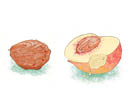

Yoksul, tozlu bir köyün kenarında kocaman, bol sulanmış bir bağ varmış, içinde de çeşit çeşit meyve ağaçları. Bağ o kadar büyükmüş ve içinde o kadar çok ağaç varmış ki, bir ucundan bakıldığında öteki ucu görünmüyormuş, hatta dürbünle bakılsa bile.
Yıllar önce köyün ağası topraklarının büyük kısmını küçük parçalara bölmüş ve köylülere satmış, ama bağı kendine ayırmış. Kuşkusuz, köylülere sattığı topraklar engebeli ve kıraçmış. Hatta su bile bulunmuyormuş oralarda. İlk başta, vadinin ortasındaki düz ve tarıma elverişli arazi köye dahilmiş –yani şimdi ağanın olan bağ yeri– köylülerin ağadan satın aldıkları, tepelerin üzerindeki, vadilerin yamacındaki taşlı araziler de öyleymiş, köylüler orada kuru tarımcılık yöntemleri kullanarak buğday ve arpa ekiyorlarmış. Her neyse, bu kadar gevezelik yeter, çünkü bunların bizim hikâyemizle bir ilgisi yok.
Bu bağda iki şeftali ağacı varmış, biri ötekinden daha körpe ve daha ufakmış. Bu iki ağacın yaprakları ve çiçekleri birbirine öyle benziyormuş ki ikisinin de aynı türden geldiğini herkes ilk bakışta anlarmış.
Büyük ağaç eskiden aşılanmış ve her yıl güzel, iri, pembe şeftaliler verirmiş, insanın eline sığmazmış bu şeftaliler. Öyle güzelmişler ki insan yemeye kıyamazmış onları. Bahçıvan, bu büyük ağacı yabancı bir uzmanın kendi ülkesinden getirdiği bir tohumla aşıladığını söylermiş. Belli ki böyle masraf edilen bir ağaçta yetişen şeftaliler oldukça değerliymiş.
İki ağacın da gövdelerine nazar değmesin diye birer nazarlık asılıymış.
Ağaçlardan küçük olanında her yıl bin tane çiçek açarmış ama bir tek şeftali bile yetişmezmiş üzerinde. Ya çiçekleri dökülürmüş, ya da ham şeftaliler kuruyup dallardan düşermiş. Bahçıvan küçük ağaç için elinden geleni yapmış ama değişen bir şey olmamış. Yıllar geçtikçe dalları ve yaprakları çoğalmış ama bir tek şeftali bile görünmemiş üzerinde.
Bahçıvan küçük ağacı da aşılamaya karar vermiş, ama bunun da bir yararı olmamış. Sanki inat ediyormuş. Sonunda usanmış bahçıvan bu durumdan. Bir numara yapıp küçük ağacı korkutmaya karar vermiş. Gidip bir testere almış eline, karısını çağırmış, küçük şeftali ağacının karşısına geçip testeresini bilemeye koyulmuş. Testere iyice bilenince bir adım gerilemiş, bir daha meyvelerini yere düşüremesin diye kökünden testereyle kesip bir kenara
fırlatacakmış gibi birden küçük şeftali ağacına doğru atılmış.
Tam testereyi ağaca sürtmek üzereymiş ki karısı onu kolundan yakalayıp “Hatırım için kesme ağacı!” demiş. “Yemin ederim ki gelecek yıl bu şeftali ağacı lezzetli, olgun meyveler verecek. Ama yine tembellik ederse o zaman ikimiz birlikte onun kafasını keser, yanıp kül olsun diye sobaya atarız.” Ne var ki bu tehdit bile ağacın aklını başına getirmemiş.
Elbette hepiniz de küçük şeftali ağacının, meyvelerinin olgunlaşmasına neden izin vermediğini nasıl açıklayacağını merak ediyorsunuzdur. Pekâlâ. Şu andan itibaren şeftali ağacı hikâyesini kendi anlatacak.
* * *
Dinleyin!..
Dikkatle dinleyin çünkü küçük şeftali ağacı konuşmak istiyor. Gürültü etmeyin –bakalım küçük şeftali ağacı neler anlatacak. Kendisi başından geçenleri şöyle anlatıyor:
Biz yüz-yüz elli kadar şeftali bir sepetin içindeydik. Güneş narin kabuklarımızı kurutmasın, al yanaklarımız tozlanmasın diye bahçıvan sepetin üstüne, dibine ve kenarlarına asma yaprakları sermişti. İncecik asma yapraklarından hafif bir yeşil ışık sızıyor, yanaklarımızın al rengiyle birleşiyordu. Kalpleri umutla dolduruyordu.
Bahçıvan bizi sabah erkenden, güneş doğmadan topladığı için etlerimiz serin ve nemliydi. Sonbahar gecesinin soğuğunu hâlâ içimizde taşıyorduk, yeşil yapraklardan süzülen birazcık sıcak da yüreklerimize yerleşiyordu.
Elbette hepimiz aynı ağacın yavrularıydık. Her yıl bu vakitler bahçıvan annemin meyvelerini toplar, bir sepete doldurur, alıp kasabaya götürürdü. Oraya varınca gidip köy ağasının kapısını çalar, sepeti teslim eder ve köye dönerdi. Tıpkı şimdi olduğu gibi.